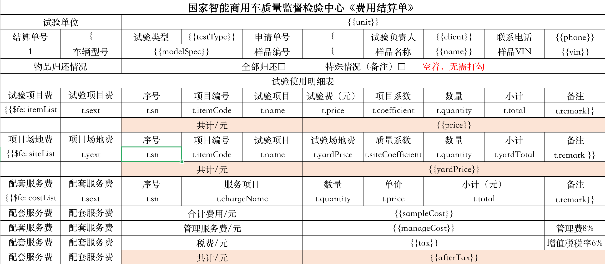

easypoi
老板和新版的easypoi都有坑，比如说用模版导出的时候，都会有合并单元格自动拆分的情况，使用旧版还会有部分循环数据，变量不识别问题，当时的解决方案时，在不改变原先代码的情况下，再引入easypoi的新版本(新旧同时存在不冲突)，针对单元格合并用到
PoiMergeCellUtil.addMergedRegion(workbook.getSheetAt(0), startRow, endRow,startCol,endCol);
使用这个接口时模版也要对应的处理一下，只能处理单个单元格(不能处理合并后的)
 如图 最左侧有三种类型要合并单元格的话，接口要调用三次，每一次的起始行通过计算获得（excel第一行是0）